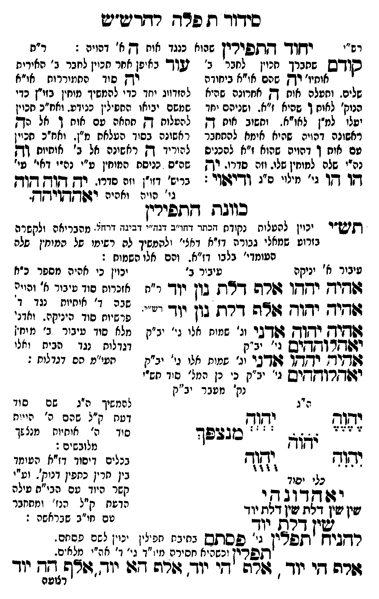

Neue Klartextfassung
■ יחוד התפילין שהוא כנגד אות ה א' דהויה ■ [רש"י — ר"ת] (קודם שמברך מכוין לחבר ב' אותיו' יה שהם או"א ביחודא שלים. ומעלה אות ה אחרונה שהיא הנוק' לאות ו שהיא ז"א. ושניהם יחד יעלו למ"ן לאו"א. ותשוב אות ה ראשונה דהויה שהיא אימא להתחבר עם אות ו דהויה שהוא ז"א להכניס נה"י שלה למוחין שלו. וזה סדרו. יה הו הו גי' מילוי ס"ג ודיאוי:) (עוד באופן אחר מכוין לחבר ב' אותיות יה סוד התעוררות או"א להזדווג יחד כדי להמשיך מוחין בזו"ן כדי שמשם יבואו התפילין כנודע. ואח"כ מכוין להעלות ה תתאה עם אות ו אל הה ראשונה בסוד העלאת מ"ן. ואח"כ מכוין להוריד ה ראשונה אל ב' אותיות וה שהם כניסת המוחין ע"י נה"י דאי' בגי' ברי"ת דזו"ן וזה סדרו. יה הוה הוה גי' הויה ואהיה יאההויהה.) ■ כוונת התפילין ■ [תש"י יכוין להעלות נקודת הכתר דחו"ב דנה"י דבינה דרחל. מהבריאה ולקשרה בזרוע שמאלי גבורה דז"א דאצי' ולהמשיך לה רשימו של המוחין שלה שעומדי' בלבו דז"א. והם אלו השמות:] [עיבור א' יניקה] אהיה יהוה אלף דלת נון יוד [ר"ת] [עיבור ב'] אהיה יהוה אלף דלת נון יוד [רש"י] אהיה יהוה אדני [וג' שמות אלו גי' יב"ק] יאהלוההים [גי' יב"ק] אהיה יהוה אדני [וג' שמות אלו גי' יב"ק] יאהלוההים [גי' יב"ק כי כן המל' סוד תש"י נק' מעבר יב"ק] [יכוין כי אהיה מספר כ"א אזכרות סוד עיבור א' והויה שבה ד' אותיות נגד ד' פרשיות סוד היניקה. ואדני מלא סוד עיבור ב' מוחין דגדלות נגד הבית ואלו העי"מ הם דגדלות:] [ה"ג] יהוה יהוה יֹהֹוֹהֹ יהוה יהוה מנצפך [להמשיך ה"ג שם סוד דעת ק"ל שהם ה' הויות סוד ה' אותיות מנצפך מלובשים:] [כלי יסוד] יאהדונהי שין שין דלת שין דלת יוד שין דלת יוד [בכלים דיסוד דז"א העומד בין תרין כתפין דנוק'. וע"י קשר היוד עם הבי"ת עולה הדעת ק"ל הנז' ומתחבר עם חו"ב שבראשה:] להניח תפלין [גי' פסתם בתיבת תפילין יכוין לשם פסתם.] תפלין [וכשהיא חסירה מיו"ד גי' ד' אה"י מלאים.] אלף הי יוד, אלף הי יוד, אלף הא יוד, אלף הה יוד
Original gegen neue OCR · Niqqud für Vergleich ausgeblendet
Original
■ יחוד התפיליןK123-001 שהוא כנגד אות ה א'K123-002 דהויה ■ [רש"י — ר"ת] (קודם שמברך מכויןK123-003 לחבר ב' ∅K123-004 אותיו' יהK123-005 שהם או"א ביחודאK123-006 שלים. ומעלה אות הK123-007 אחרונה שהיא ∅K123-008 הנוק' לאות וK123-009 שהיא ז"א. ושניהם יחד יעלוK123-010 למ"ן לאו"א. ותשוב אות הK123-011 ראשונה דהויה שהיא אימא להתחבר ∅K123-012 עם אות וK123-013 דהויה שהוא ז"א להכניס ∅K123-014 נה"י שלה למוחין שלו.K123-015 וזה סדרו. יה הו הוK123-016 גי' מילוי ס"ג ודיאוי:) (עוד באופן אחר מכוין לחבר ב' אותיות יה סוד התעוררות או"א להזדווג יחד כדי להמשיך מוחין בזו"ן כדי שמשם יבואו התפילין כנודע. ואח"כ מכוין להעלות ה תתאה עם אות ו אל הה ראשונה בסוד העלאת מ"ן. ואח"כ מכוין להוריד ה ראשונה אל ב' אותיות וה שהם כניסת המוחין ע"י נה"י דאי' בגי' ברי"ת דזו"ןK123-017 וזה סדרו. יה הוה הוהK123-018 גי' הויה ואהיה יאההויהה.) ■ כוונת התפילין ■ [תש"י יכוין להעלות נקודת הכתר דחו"ב דנה"י דבינה דרחל.K123-019 מהבריאה ולקשרה בזרוע שמאלי גבורה דז"א דאצי' ולהמשיךK123-020 לה רשימו של המוחיןK123-021 שלה שעומדי'K123-022 בלבו דז"א. והם אלו השמות:] [עיבורK123-023 א' יניקה] אהיה יהוה אלף דלת נון יוד [ר"ת] [עיבור ב'] אהיה יהוה אלף דלת נון יוד [רש"י] אהיה יהוה אדני [וג' שמות אלו גי' יב"ק] יאהלוההים [גי' יב"ק] אהיה יהוה אדני [וג' שמות אלו גי' יב"ק] יאהלוההים [גי' יב"ק כי כן המל' סוד תש"י נק' מעבר יב"ק] [יכויןK123-024 כי אהיה מספר כ"א אזכרות סוד עיבור א' והויה שבה ד' אותיות נגד ד' פרשיותK123-025 סוד היניקה. ואדני ∅K123-026 מלא סודK123-027 עיבור ב' מוחיןK123-028 דגדלות נגד הבית ואלו העי"מK123-029 הם דגדלות:] [ה"ג] יהוה יהוה יהוה יהוה יהוה מנצפך [להמשיךK123-030 ה"ג שם סוד דעתK123-031 ק"ל שהם ה' הויותK123-032 סוד ה' אותיות מנצפך מלובשים:] [כלי יסוד] יאהדונהי שין שין דלת שין דלת יוד שין דלת יוד [בכליםK123-033 דיסוד דז"א העומד ∅K123-034 בין תריןK123-035 כתפין דנוק'. וע"י קשר היוד עם הבי"ת עולה הדעת ק"ל הנז' ומתחבר עם חו"ב שבראשה:] להניח תפלין [גי' פסתם בתיבת תפילין יכויןK123-036 לשם פסתם.] תפלין [וכשהיאK123-037 חסירה מיו"דK123-038 גי' ד' אה"י מלאים.] אלף הי יוד, אלף הי יוד, אלף הא יוד, אלף ההK123-039 יוד ∅K123-040
OCR · fehlbar
כידוד ז פרש רדריטיש רש"י לבלש דתפוריןK123-001 שהוא כנגד אות דץ א 'K123-002 דהויה : ר"ת סודש שחברך חכיין לחבר' ב' זשו- באיפן אחר חכויןK123-003 לחבר ב' האיריתK123-004 אותיו' דקK123-005 שהם או"א ביחודה רך סוד החמיררות או"אK123-006 שלים. ותעלה אוח דץK123-007 אחרונה שהיא להזדויג יחד כדי להמשיך מוחין בזיין כדיK123-008 הנוק' לאוח ךK123-009 שהיא ז"א. ושניהם יחד שמשם יביאו החפ-לין כנודע. ואח"כ חכוין יטלו'K123-010 למ"ן לאו"א. וחשוב אוח דץ להטלוח דק תחאה פם אוח ך אל הךK123-011 ראשונה דהויה שהיא אימא להתחבר ד אשונה בסיד העלאח מ"ן. ואח"כ חכזיןK123-012 עם אוח ךK123-013 דהויה שהוא ז"א להכניס להוריד דץ ראשונה אל ב' אוחיות דךK123-014 נה"י שלה למוחין שלי.K123-015 וזה סדרו. יק שה"ס כניסח המוחין ט"י נה-י דאי' עי' 11 ד-וK123-016 גי' מילוי ס"ג ודיגטוו: בריש' דזי''K123-017 וזה סורו. ידך דקודן דזיךקK123-018 גי' הויה ואהיה זיג[ [ורקחךך. כווגת דגתלירין דתיש"י ינוין להטלוח נקודח דבתר דוזי"ב דנ' דביבח דרזזז.K123-019 מהבריאה ולקשרה בזרוע שמאלי גבורה דז"א דאצי' (להמשיךK123-020 לה רשימי סל תמיחיןK123-021 שלה פטומדי'K123-022 בלבו דז"א. והם אלו השמוח : עיבירK123-023 א' יניקה עיביר ב' יכויןK123-024 כי אהיה מספר כ"נז דיד: ידו זזרה דדש בון יוד י"ח אזדי( בי] צ( י זני. גודיד ידוד זזדה דרת גון יוך "'. צ( ((ג(ציג((גי'זז:] ז ' -) ז ) ז ות גון יו ' פדש"ותK123-025 סוד היניקה. ואדני דש[יח יקוץ זפדבר זנ' שמוח אלי ני' יב"קK123-026 מלא סוךK123-027 עיבור ב' מ יח.ן ודלתמוקחיש 7. -ב"קK123-028 דגדלות נגד הבית יאלי ז(דידש ידדד' 4:דגי זג' שמוח אלי ני' יב"ק תעי"מK123-029 הם דגדליח : יזפד[רוךקךקיש ג' יצ"ק נ' נן המל' סיד תש"י נק' מטבר יב"ק ה"ג ל המשיךK123-030 ה"ג שם ם וד וסןס ג2[בן דטחK123-031 ק"ל שהם ה' היי ית ד 7 7 7 - - - - : : 7: 4472 4K123-032 סוד ה' אוחיוח מנצ 3 ישוך לללל לובשים: ל בלש ש(ד בכליםK123-033 דיסוד דז"א העומד כלי יפודK123-034 בין חריןK123-035 כתפין דנוק'. לא י 7 - דזב ד י (גכ הי[. שם 3 עילה שין שיך דלוז שין דלף יוד נוצן] (.) לן לילזיי שין דרזת יך טם חי"ב שבראשה : רךקביא תפרין ני' פלסתש בחיבח חלין ינייןK123-036 לשם פהזם. פרין (כשפיאK123-037 חסירה מי"דK123-038 גי' ד' אה"י נלא'ם. זזרה יK123-039 יוד :אץ די יוד יורד דו יוד צירצ([ף יוד רצועהK123-040